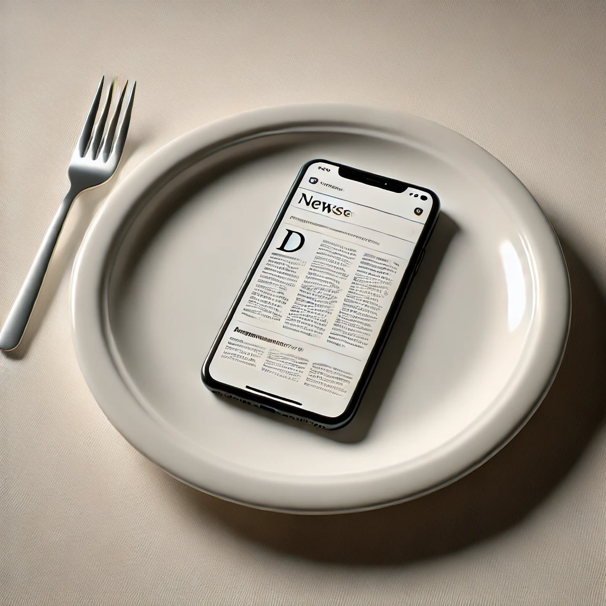

Everyday Systems: Podcast : Episode 89
Proactive Procrastination (ProPro)
Hi, this is Reinhard from Everyday Systems.
Negative tracking. It’s a powerful Everyday Systems principle. It’s basically: tracking is a pain, so if you want to do less of something, track it. Surgical Flogging is a prime example of this: keep a minimalist food log until you are satisfied with your dietary habits or reach some new level of satisfaction. Then as a reward, you can stop. The pain of the flogging is a speed bump. The reward of being able to stop is an incentive. You use the badness of tracking itself, the fact that it is tedious and potentially embarrassing, in a tightly limited way (so it’s not too bad), for something good.
I’ve been taking a similar approach to news consumption lately, the junk food of the mind, at least, the way most of us usually consume it. We have this idea that it is important for us to know what catastrophes are happening in various far flung parts of the world and in the political stratosphere. I am not sure how true this is; I think in some measure it’s a kind of masochistic, voyeuristic entertainment, a kind of self-inflicted “hate week” out of 1984, but in any case, most of us don’t need to be doing it quite as much as we are – and when we are, it’s is usually when we should be doing something else. So I’ve been practicing a form of negative tracking with a system I call Proactive Procrastination, or ProPro for short.
It works like this: I am not allowed to look at any news sites unless I record the start and stop time of my news reading session. I should do this once a day, proactively, and no more, but the critical thing is that I record the time. And I record the time in a specific way: I have a running google doc to log news consumption. I make a daily entry in reverse chronological order, most recent entries at the top, so I don’t have to scroll every time I update it, or if I want to see the most recent thing, it’s always right at the top. I find this technique of reverse chronological log entries useful for all kinds of logs. I’ll do a separate episode on that at some point.
For every daily log entry, I immediately mark the time I start. Then I note any interesting urls, in case I want to come back to them or share them with someone. Sometimes I will write an impression or copy paste a quote. Basically, my ProPro log is a list of annotated bookmarks in reverse chronological order. When I am done I record the stop time. I close all my news related tabs. I close my google doc log. I’m done for the day.
Ideally. Like I said, I can open it up again for another logged news reading session. As long as I record the start and stop time I’m allowed to do that. But I almost always find that once a day is plenty. Some days I even miss a day, because I’m trying to save up my one ProPro session as a treat for later, and then I find I don’t have the time anymore. I’d rather spend the last few minutes of my day doing something else. What do you know? The news isn’t so important after all.
Sometimes I set a timer for 7 or 14 minutes so I don’t get too lost and forget what I am doing, but I don’t have to do this, the only hard parameter is that I record the time. As I mentioned, ideally I do it once a day and only once a day, but again, as long as I record the start and stop times, it’s OK. In practice, I find this happens very rarely. I’ll miss a day more frequently than I’ll have multiple sessions in a day.
I’m usually off in not many minutes. Because it’s shocking and embarrassing how long it can wind up taking, as I now force myself to notice, and I want to avoid or at least minimize that embarrassment.
I enjoy the less I read more, because the time pressure forces me to be more selective about which articles I dive into. Now that I have to be choosey, I find I’m more interested in stories about possible life on Europa or the rediscovery of a lost play of Euripides or the odd behavior of opposums than I am about someone’s poll numbers in whatever race or some bomb going off somewhere. I’m OK with that. It’s not that I never read such things anymore. But only when it actually feels like information, like something new or different, not the steady, miserable drumbeat of humans being horrible to each other as usual.
It’s a little bit like how limiting yourself to single plate meals in the No S Diet nudges you to take each plate more seriously and improve them qualitatively. Instead of permasnacking on news, I’m making a meal of it. I can only fit so much onto my plate, so I want to make sure I prioritize the good stuff. I’m not noshing on whatever random garbage comes along.
Sometimes I come across something really delightful. Usually in the scientific discoveries about animals department, or something else similarly far removed from the nasty world of politics and war. I’ll copy paste a section. Maybe even turn it into a cloze deletion anki card for me to revisit now and again. So I’ve not just limited my procrastination, but turned it into something qualitatively better.
ProPro gets a box on my daily personal punch card for me to check off. And a slot in my work calendar when I’m planning my day in detail. It takes up space. It took up space before, but I refused to acknowledge that fact. Now that I honestly acknowledge the time it takes, it takes less, and I respect it more.
To the extent that news reading is actually a good thing, I am getting my dose of it. I am proactive about it. I should do this once a day. I have both limited this formerly mostly not so good thing and turned it into something better.
I haven’t yet completely snuffed out my instinct to open news sites whenever I have a spare moment or want to avoid doing necessary, unpleasant task. I still catch myself about to do this. Sometimes I even get as far as loading a site. But I do catch myself. I stop immediately. And I think even my instincts are gradually learning. It’s happening less frequently. We’ll see. My legitimized activity for such compulsive procrastination situations is reviewing my anki cards, but mostly, now, I’m fine to just go back to the task I was avoiding.
If you’re having trouble imagining what a Pro Pro new log might look like take a look at the transcript for this episode. I’ll stick a screenshot of my google doc there.
ProPro, narrowly defined, is just for reading online news, which is the only real danger for me.
I haven’t in many years had a habit of listening to news on the radio or watching it on TV unless I’m listening or watching it in a foreign language as a language learning exercise. I still do that, usually German news while I’m watching shovelglove or cooking. So I still get some news outside of my ProPro sessions. But it’s also pretty limited (often I listen to or watch something else) and with the language learning element I also have a mechanism for turning that kind of news procrastination into something positive, so I’m not worried about it.
As for print news, we no longer get any print newspapers, so narrowly defined, it’s not even possible for me any more. We do get a couple of print weekly magazines, but they’re not very newsy, and pretty high quality in terms of content, and their physicality makes the whole experience qualitatively different, so I don’t begrudge myself some little untimed lingering with them over coffee on the weekends. I almost consider that kind of reading “Study Habit” level.
I never look at news on my phone. Only on my computer. I could, technically, I’d be allowed to, as long as I logged it, but since I’m going to go through the bother of logging, why not pull out the big screen? A phone is a small plate for a meal.
Between all this, and the fact that people around me will let me know if anything earth shattering or even close happens in news I missed, I feel pretty confident that I’m not going to miss out on anything truly important. One the contrary. I’m still getting all the news and then some.
Well, that’s it. That’s ProPo (plus a couple of corner cases). It saves time, reduces stress, and improves the time I do devote to it. I hope it or something like it can do the same for you. Thanks for listening.
© 2002-2024 Everyday Systems LLC, All Rights Reserved.